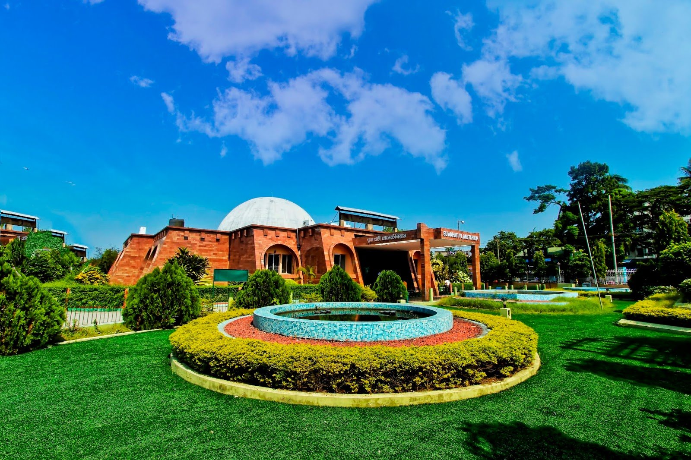

Lying on the southern fringes of the mighty
Brahmaputra river, Guwahati, the largest
city of Assam, holds spirituality and
adventure at its heart. Home to the much
revered Kamakhya Temple, dedicated to mother
goddess Kamakhya, an incarnation of Goddess
Sati, the 8th-century temple attracts devotees
throughout the year.Apart from temples, river
cruising in the feisty Brahmaputra is a magical
experience, with rock climbing at the Elephant
Rocks in Morigaon, about 78 km away, coming a
close second.

About Tour
Day 1:
Peacock Island
Guwahati Planetarium
Nehru Park
Pobitora Wildlife Sanctuary
Nameri National Park And Forest Reserve